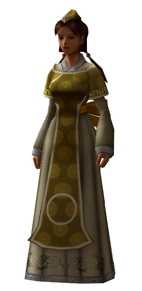
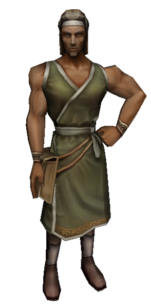
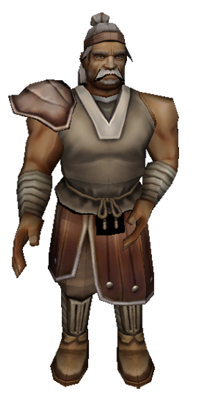
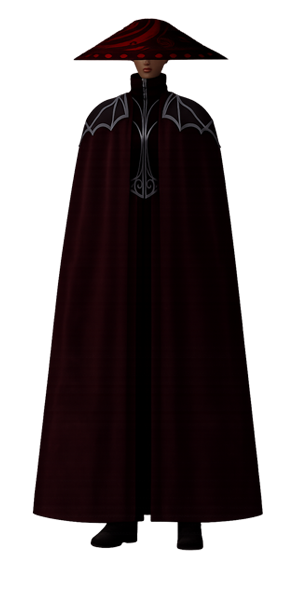
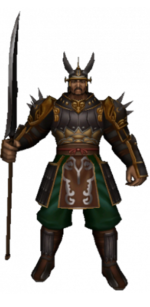
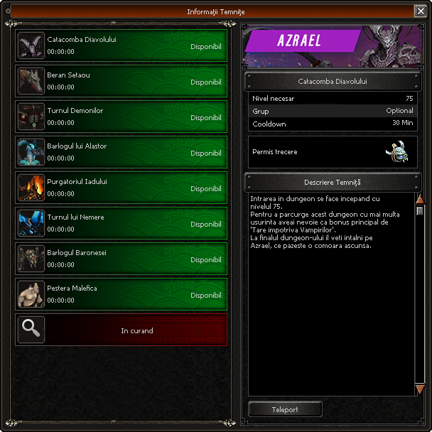
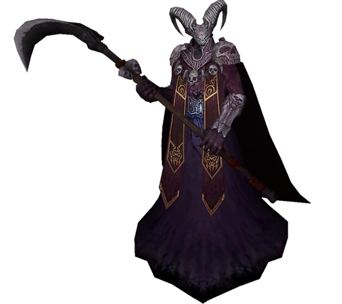
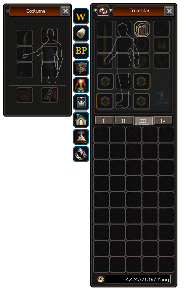

Bine ai venit pe LuraMT2
Pagina oficiala de prezentare a serverului LuraMT2. Aici poti explora NPC-urile interactive, dungeonurile si sistemele disponibile, exact ca in joc.
Informatii generale
LuraMT2 este un server PvM Mediu, de tip MiddleSchool, creat pentru jucatorii care apreciaza progresul echilibrat si experienta clasica Metin2.
- Status maxim: 90 puncte
- Evolutii clasice:
- Armura de Otel Negru → Otel Albastru → Corn de Diavol
- Sabie de Batalie → Sabie Triton → Sabie Inscriptionata
- Armurile de nivel 61 au si ele o evolutie PVM
- In curand urmeaza o evolutie si pentru armele de nivel 75!
- Upgrade-urile minore se gasesc la Fierar
- Biolog portabil!Tot la fierar vei gasi si primele obiecte pentru biolog!
- Sisteme integrate: Switchbot, Search Shop
- Acces la Dungeon-uri direct din inventar
- Inel de teleport integrat in fereastra de echipament
Progres si harti
- V2 accesibil de la nivel 35
- V3 si V4 accesibile de la nivel 75
- Mapele Beta disponibile de la nivel 90+
Yang-ul se poate farma eficient pentru un inceput usor in V2, iar ulterior in SD3, V4 si Mapele Beta.
Rate si economie
In timpul saptamanii:
- EXP: 200%
- Yang: 200%
- Drop: 200%
In weekend:
- EXP: 250%
- Yang: 250%
- Drop: 250%
Voucherele MD se pot obtine si in joc, farmand tokenuri Lura de la anumiti bosi nivel 45+. Majoritatea eventurilor ofera ca premii Vouchere MD.
Sansa de reusita la upgrade
- +7 → 70%
- +8 → 60%
- +9 → 50%
Ce nu exista pe LuraMT2
- Sistem de esarfe
- Auto Hunt
- Alchimie
- Insotitori
- Toxicitate si Aroganta din partea stafului!
Un proiect mai mare
LuraMT2 face parte dintr-o viziune pe termen lung. Serverul reprezinta o punte catre Arkan2, un MMORPG nou, creat de la zero.
Toate contributiile realizate pe LuraMT2 sunt reinvestite direct in dezvoltarea proiectului Arkan2.
Mai multe informatii despre Arkan2 gasesti pe www.luragames.com
Echipa LuraMT2 iti ureaza un joc placut!
NPC Interactivi
Fiecare NPC este complet interactiv. Apasa pe un NPC pentru a-i deschide magazinul sau interfata dedicata, exact ca in joc. Butoanele din fereastra sunt functionale.

Magazin General
Locatie: Map1
Negustor de arme
Locatie: Map1
Negustor de Armuri
Locatie: Map1
Maestru
Locatie: Map1Fierar
Locatie: Map1Femeia Batrana
Locatie: Map1
Invatator de Magie
Locatie: Map1Dungeonuri
Selecteaza un dungeon pentru a vedea boss-ul aferent si informatiile disponibile, exact ca in joc.


Sisteme
Apasa pe butoanele din inventar pentru a descoperi sistemele disponibile pe server si modul lor de functionare.
